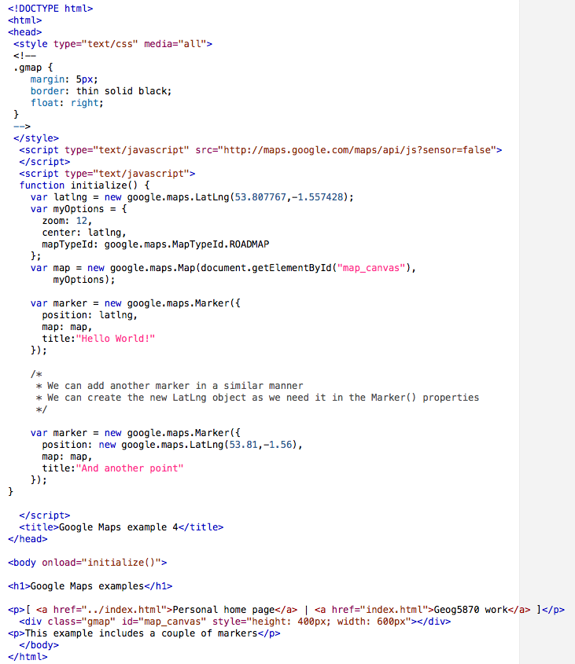
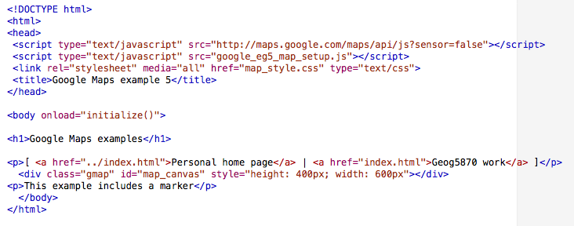
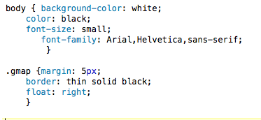
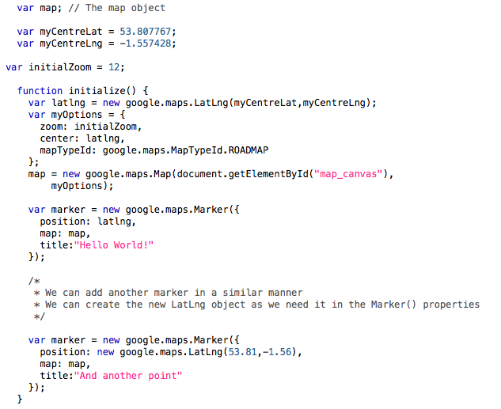

A copy of this example can be found here: google_eg4.html
If the page is further developed in this way, it will soon start to become
unmanageable. The page mixes together a number of distinct elements:
The page will become much more readable if we start to separate these aspects. The following figure shows a re-written version of the page. The behaviour as far as the viewer of the page is the same as the previous version, however there are some important changes to the way that the code is structured. The Figure below shows the listing of three files:



The second file (the map_style.css file) is the linked style sheet. It repeats the .gmap class definition used before, and adds, for the sake of example, a style definition for the body tag which sets the font style and size. Given the inheritance rules for cascading style sheets (CSS), changes to the body tag are inherited by all tags which are found inside the body element.
Finally, the third file illustrated is the new map_setup.js script. It is broadly the same as the previous example, but has a few notable differences:
var map;) has been moved
to the top of the file, outside the initialize() function. Why
should we do this? You may recall the discussion in the introduction to
JavaScript about variable scope. If the map object is declared inside a
function, it will be visible in that function only. By declaring it outside
any function definition, we make the map object have global scope. If we
add further functions to our code, the global map object will be useable in
those functions as well.var map =
google.maps.Map(...), but this has been changed in the revised
example to map = google.maps.Map(...). We have already
declared the variable (using var), so do not need to do so
again.myCentreLat and
myCentreLng to hold the centre co-ordinates. This allows us to
leave the map creation part of the script as generalised as possible, and
keep all the per-map configuration together; thus is intended to promote
easy re-use of the script.initialZoom,
which is used in the creation of the Map object. Again, this
is to keep the map configuration data in a single location.The revised version is an improvement, and should make code re-use and maintenance easier. However, a word of warning: we have used a fairly generic name for our map setup file (map_setup.js). It would be better practice to give this a specific name (e.g. google_eg5_setup.js), so that we can have several maps stored in the same directory without them all trying to read the same file!